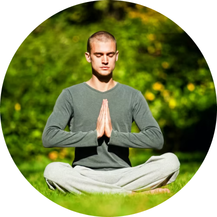
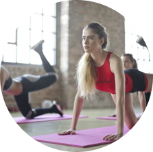
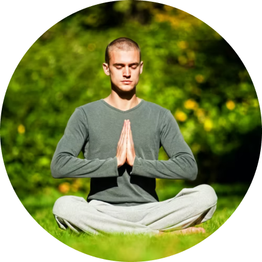
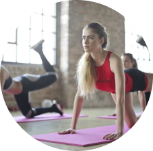

We at Yogwithshilpa take care of the physical and mental well being of the practitioner.
It’s not only about gaining a toned body, more flexibility and better stamina but also
about a calm mind, reduced stress and a completely relaxed and stress free mind.
Connect with us to practice-
Omkar (So-Ham), Japa ( feel the high vibrations of the universal sound),
Sun Salutations ( with different modifications to make it more interesting and beneficial for the practitioner),
Moon Salutations
Asanas (Beginner/ intermediate/ advanced levels),
Hatha Practice, Vinyasa Practice, Power Yoga
Stretches (cooling down for body),
Yog Nidra (Relaxation technique ),
Pranayama (Breathing techniques)
.
 


